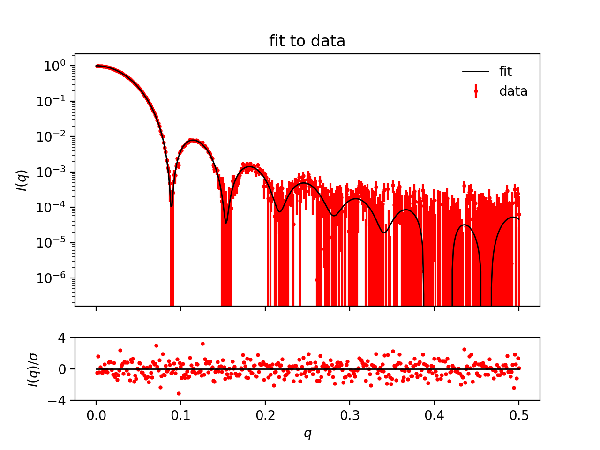
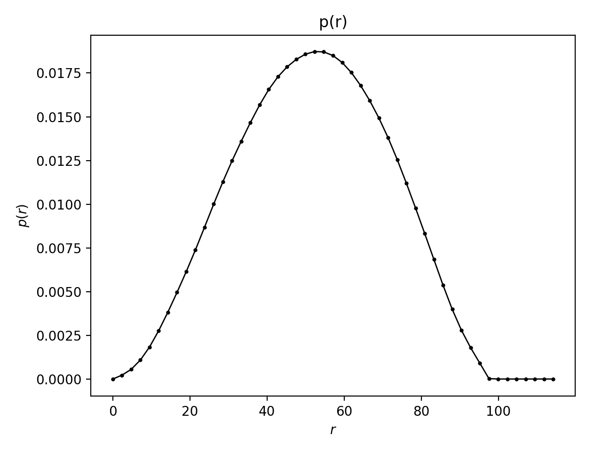

Home
BayesApp


BayesApp performs a Bayesian indirect Fourier transformation (BIFT) of SAXS or SANS data to generate the pair distance distribution, p(r). Additional features are offered for data quality assessment and primary data analysis, including: Kratky, Guinier, and Porod plots, Mw determination, error assessment, outlier identification, and rebinning.
Overview
- Batch version: BayesApp's GitHub page
- Web application: BayesApp GUI (GenApp)
- Most recent publication: (Larsen and Pedersen, 2021)
Additional resources
- The source code for the web application: BayesApp GUI's GitHub page
- Publication describing the BIFT algorithm: Hansen 2000